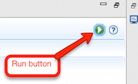

| TACIT Naive Bayes Classifier Tool | ||||||||
| Overview |
| Naive Bayes classification is a supervised learning algorithm that is used to assess the uniqueness of text files belonging to user-determined set of two or more distinct groups (called classes, e.g., Democrats, Republicans, and Independents). This tool can also predict the classes of documents that have not yet been sorted into a group.
After using the naive Bayes plugin to label unclassified data, users can conduct further analyses on the automatically classified dataset.
Naive Bayes classification is accomplished by applying Bayes theorem, which (like Word Count techniques) assumes that all language features (i.e. single words, punctuation, etc) are independent from one another. While this assumption is often incorrect (e.g., the words "fried" and "chicken" mean something different when they are put together as "fried chicken"), it permits the algorithm to work quickly and efficiently, which often yields benefits that outweigh the costs of the independence assumption. Classification is accomplished through three steps. First, the researcher organizes and labels documents according to the groups they are interested in assessing and then splits the dataset into a training subset and testing subset. The classifier uses the training subset of data to determine features (i.e., words) that distinguish the groups from each other. The classifier then uses this information to test how accurately the trained algorithm can predict group membership for the remaining labeled documents in the test subset. Finally, if the trained classifier is sufficiently accurate, the algorithm can be used to predict which group (or class) any remaining unsorted documents belong in. To implement a naive Bayes algorithm, the only definite requirement is that the documents be pre-sorted into the groups the user is interested in comparing. During the training process, the algorithm extracts features from training texts that are predictive of class association. The extraction of these features is both automatic and optimized, so it is not necessary to specify the number features to be extracted. |
| Basic Tutorial: Using the Naive Bayes Classification Tool |
| Specifying Input Files for Analysis |
| All input data files must be saved as corpus classes (subgroups) within a corpus in Corpus Management or as .txt files within separate folders to be compatible with TACIT. See the Corpus Management Help Section if you need to convert files to compatible formats.
Notably, the naive Bayes tool does not require that data be split into training and test sets. When the algorithm is run,
the data contained in the class directories is automatically split into training and test sets, following a 90% to 10%
ratio, respectively.
To specify which classes/groups you would like to compare in analysis, select Add Corpus or Add Folder under the Input Details panel. All corpora and folders added to the Input Details panel are automatically selected to be included in analysis by the check mark box to the left of the corpus/file/folder name. The number of files selected for analysis is indicated at the bottom of the input panel. To de-select an unwanted folder or file, uncheck the box next to its name. Add Corpus: The Add Corpus button will allow you to add a group/class from a corpus stored in Corpus Management. Add Folder: The Add Folder button will allow you to add a folder as a subgroup for analysis. |
| Additional Input Options |
| Preprocess: The Preprocess check box allows users to apply a variety of data cleaning techniques to the input data before analysis. Click on the hyperlink in order to specify which cleaning processes you would like to apply (i.e., Stop Word Removal, Delimiters, Porter Stemming, Capitalization).
Selecting the Classify Unlabeled Data option will allow you to automatically sort documents that have not yet been assigned a group into the groups you have provided in the input details section. To specify a folder/corpus class containing the files to be sorted, click the Add Folder or Add Corpus Class buttons next to the Classify Input Path box. |
| Specify Output Details |
| K-value for Cross Validation: K-fold validation determines the accuracy of the classifier at sorting the texts into groups based on the features it has identified. The number entered in this text box specifies
the number of equal-sized randomly generated subsamples the text should be split into. One of these subsamples is then randomly selected as the test set for feature identification and
the algorithm is trained on the remaining samples. This process is then repeated k-times (the folds) so that each subsample
is used once as the test set. The error rates obtained from each fold are then averaged to estimate the actual error rate.
Any number up to the total sample size can be specified as the k-value; however, k=10 is one of the most commonly used values.
To specify an output folder where crawled files will be saved, click on the Browse button to the right of the Output Location bar and select a folder. If you create a new folder within this menu and change its name from "New Folder", click on any other folder and then click back on your newly created & renamed folder to select it. After specifying all parameters, click the green and white play button (Image 1) located in the top right corner of the window to run the program. Output information regarding the k-fold validation process as well as the average test accuracy, standard deviation, and standard error will be displayed in the console panel at the bottom of the tool. Image 1. Run button location  |
| Understanding Naive Bayes Classification Output |
| While TACIT's naive Bayes tool is running, performance statistics for each k-fold validation will be output in the Console window.
The average test accuracy (averaged across k-folds), as well as its standard deviation and standard error, will also be output in the Console window.
These statistics should be used to evaluate the accuracy performance of the algorithm on the data provided.
For each analysis, a summary log file titled "Naive_Bayes_Run_Report_[date]_[time]" is created. This file contains the TACIT version number, date, and time of the analysis. If Classify Unlabeled Data was selected, a .csv file with the classification data will be generated. The name will be the names of the folders/classes followed by the date and time (e.g. "class1-class2-Date-Time.csv"). This file will contain a row for every document being sorted with the following columns: "File," which contains the file name of each instance; "Predicted Class," which contains the class predicted for instance N; "Predicted Class Probability," which contains the estimated probability that instance N belongs to the predicted class; and "Other Class Probabilities," which contains the estimated probabilities of instance N belonging to the classes that were not predicted. |